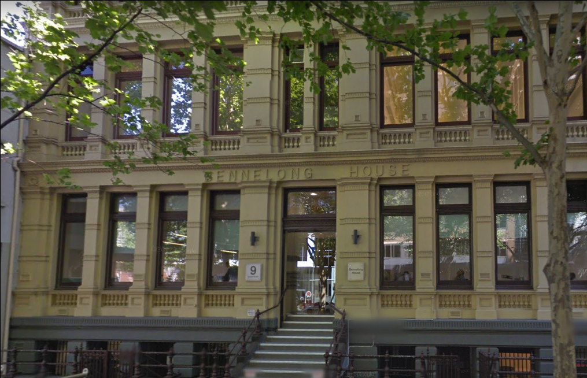

Interview with an IT Professional
Team HydroKnow gained the opportunity to interview an IT Professional of our choosing. We were fortunate enough to have a close connection with substantial experience in the IT industry; Russell Close.
Russ has been working in IT for almost 30 years. He has experience across all fields of IT and is the head of his department within the financial based company that he is employed by. With this level of seniority, Russ has been a part of iteration and the applications of older and advanced ways that technology can be utilised throughout business models.
Russ is extremely well versed in anything IT. The insight into not only IT as a field, but as a lifetime career, was phenomenal. Russ also mentioned the ease of working for a great company can bring so much opportunity to your career.
We utilised Microsoft Teams to conduct this interview which we think worked very well. As we are all located in different states and the both of us are in lockdown, the ability to conduct an in-person interview was not possible. The interactions that we may have experienced in-person did not have any detrimental outcomes to those of a video interview and we were both happy with the result.
Russ's workplace, Bennelong House on Queen Street, Melbourne
After interviewing Russ, we discovered that the impact of cybersecurity is a large part of his efforts within his department. After Renee’s ideal job points in this direction, it was clear that this created the narrative flow for the rest of the interview.
Russ mentioned that the nature of his work can become quite challenging and the impact of cybersecurity within this specific area comes with its own difficulties. What we found difficult during this interview was the concept of staying on track with the interview questions that we had prepared. The questions ask went beyond the ten questions that we had prepared and Russ. We also found Russell provided so much context and information around each answer that he was answering more than one question in his answers.
If we were given the opportunity to interview another IT Professional, we would ensure that our questions are more industry specific, being cybersecurity. We would also aim to draw out more context of the junior roles in the IT industry as this is more pertinent to us both.
Below you will find the interview transcript with time stamps that correspond to the recorded version of this interview, paired with an audio player that has the recording in .mp3 form. You can also download a .pdf version of the transcript here. Feel free to listen to the audio while you read along.